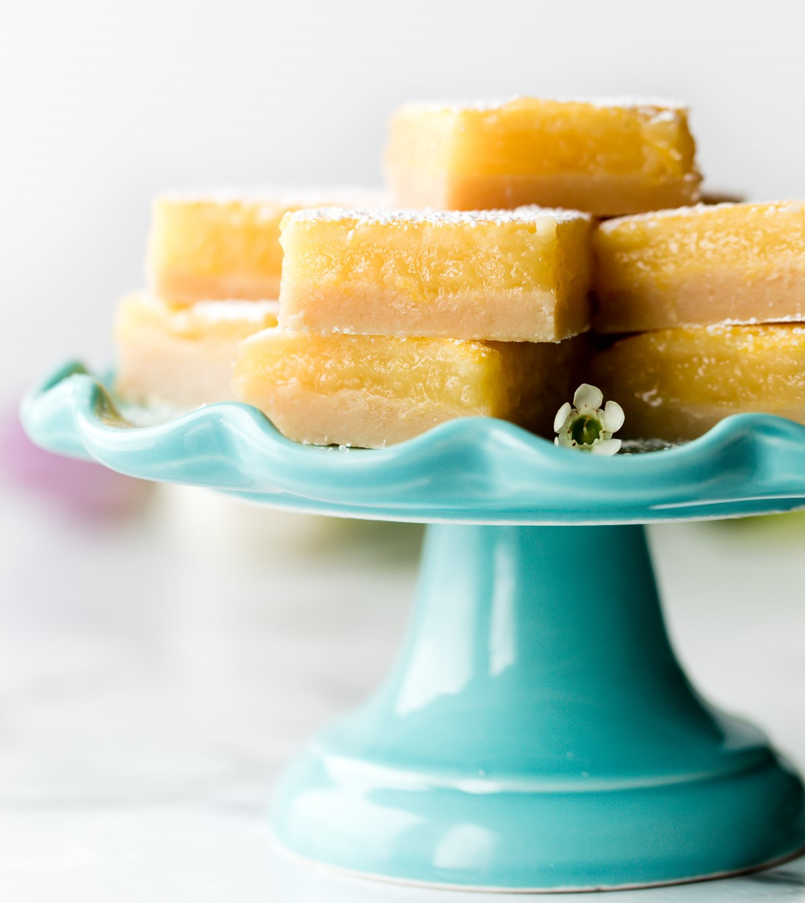

Lemon Bars
Total Time: 3:50

You only need 7 ingredients to make these lemon bars. The lemon curd filling is extra thick and creamy and sits on an irresistible butter shortbread crust. They’re simply the best lemon bars and are perfect for picnics, bake sales, spring brunches, baby showers, and bridal showers.
Ingredients
SHORTBREAD CRUST
- 1 cup (230g; 2 sticks) unsalted butter, melted
- 1/2 cup (100g) granulated sugar
- 2 teaspoons pure vanilla extract
- 1/2 teaspoon salt
- 2 cups + 2 Tablespoons (265g) all-purpose flour
LEMON FILLING
- 2 cups (400g) granulated sugar
- 6 Tablespoons (48g) all-purpose flour
- 6 large eggs
- 1 cup (240ml) lemon juice (about 4 lemons)
Directions
1. Preheat the oven to 325°F (163°C). Line the bottom and sides of a 9×13 baking pan* with parchment paper, leaving an overhang on the sides to lift the finished bars out (makes cutting easier!). Set aside. 2. Make the crust: Mix the melted butter, sugar, vanilla extract, and salt together in a medium bowl. Add the flour and stir to completely combine. The dough will be thick. Press firmly into prepared pan, making sure the layer of crust is nice and even. Bake for 18-20 minutes or until the edges are very lightly browned. 3. Make the filling: Sift the sugar and flour together in a large bowl. Add the eggs and lemon juice and whisk until completely combined. 4. Pour filling over warm crust. Bake the bars for 22-26 minutes or until the center is relatively set and no longer jiggles. (Give the pan a light tap with an oven mitt to test.) Remove bars from the oven and cool completely at room temperature. I usually cool them for about 2 hours at room temperature, then stick in the refrigerator for 1-2 more hours until pretty chilled. I recommend serving chilled. 5. Once cool, lift the parchment paper out of the pan using the overhang on the sides. Dust with confectioners’ sugar and cut into squares before serving. For neat squares, wipe the knife clean between each cut. Cover and store leftover lemon bars in the refrigerator for up to 1 week.
Notes
- Glass Dish: Use a ceramic or glass pan. I always detect a slight metallic flavor in the lemon bars when baked in metal pans.
- Halve the Recipe: Halve each of the ingredients to yield around 12 squares in a 9×9-inch baking pan. Same oven temperature. Bake the crust for 16-18 minutes and the bars for 20 minutes or until the center no longer jiggles.
- Sifting: More often than not, the flour doesn’t fully incorporate into the lemon filling unless it’s sifted with the sugar. As directed in the recipe, sift the two together before adding the eggs and lemon juice.
- Lemon Juice: For exceptional taste, I highly recommend fresh lemon juice.